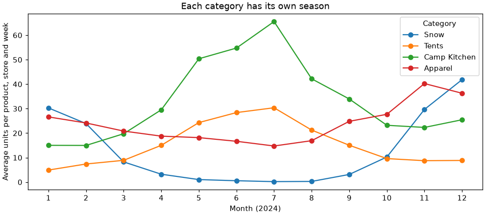
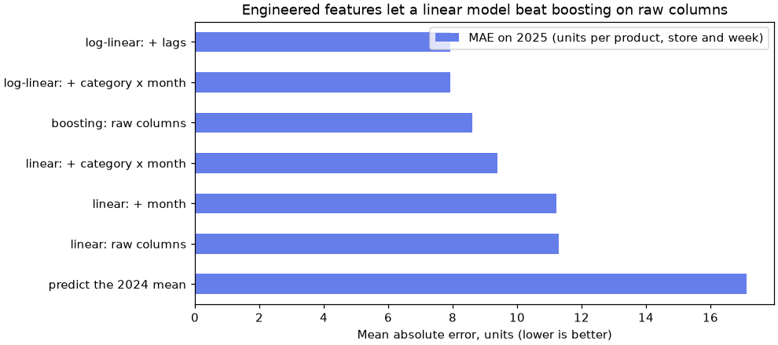

🧱 Lesson 2.3: Creating Features
Give your models better questions to ask: turn thresholds, interactions, dates, history and group averages into new columns, and watch a simple model catch up with a complex one.
🎯 Learning Objectives
By the end of this lesson, you will be able to:
- Explain why a linear model cannot use a threshold, a U-shape or an interaction unless you build it as a feature
- Create flags, ratios and interaction terms with pandas, choosing them from the training data only
- Extract calendar parts and cyclical (sine and cosine) features from a date column
- Build lag and rolling-window features per group with
shift, so no row sees its own future - Put feature creation inside a
PipelinewithFunctionTransformerand measure the lift with cross-validation
In This Lesson
🧭 Features Are the Questions a Model Can Ask
In Lesson 2.1 you transformed columns: filled gaps, rescaled numbers, turned categories into 0/1 columns. The information stayed the same; only its format changed. This lesson is about creating columns that did not exist before: "has this customer gone quiet for more than 150 days?", "how many support tickets did a customer file without the app?", "how many units did this product sell last week?". These new columns are called engineered features, and they are often the cheapest accuracy you will ever buy.
💡 Mental Model: The Interviewer and the Calculator
Think of a model as a very fast calculator with a fixed shape. Logistic regression, for example, can only add up weighted columns: more of a column always pushes the same direction, by the same amount per unit. It cannot say "nothing much happens until 150 days, then risk jumps", and it cannot say "tickets matter, but only for people without the app".
You are the interviewer who decides which questions the calculator gets to see. Ask "how many days since the last order?" and it can only answer with a straight line. Also ask "is it more than 150 days?" and it can now express a jump. Feature engineering is writing better interview questions, using what you know about the business.
The loop matters as much as the features. Every idea gets measured against the plain model with cross-validation (Lesson 1.3), and most ideas will not help. That is normal and fine: an idea that does not help is a cheap experiment, not a failure.
🤔 Why This Matters
Trees and boosting (Module 5) can discover thresholds and interactions by themselves, which is a big reason they do well on tables. But engineered features help them too, they make simple models competitive, and a model built on well-named features ("lapsed_150", "tickets_no_app") is far easier to explain to Pinecrest's marketing team than one built on raw columns.
🔎 Look Before You Build
Start with the churn table and the course's standard split. Every exploration below uses train only: the test rows stay locked away, even from your eyes.
import numpy as np
import pandas as pd
import matplotlib.pyplot as plt
from sklearn.model_selection import train_test_split
pd.set_option("display.width", 150)
customers = pd.read_csv("data/customers_churn.csv")
base_features = ["tenure_months", "orders_12m", "spend_12m", "avg_order_value", "days_since_last_order",
"returns_12m", "return_rate", "support_tickets_12m", "discount_share", "app_user"]
train, test = train_test_split(customers, test_size=0.25, stratify=customers["churned"], random_state=42)
X_train, y_train = train[base_features], train["churned"]
X_test, y_test = test[base_features], test["churned"]
print(X_train.shape, X_test.shape)Output
(4500, 10) (1500, 10)A straight line assumes that each extra day without an order adds the same amount of risk. Is that true? Cut days_since_last_order into ranges and look at the churn rate in each.
recency = pd.cut(train["days_since_last_order"], bins=[-1, 30, 90, 150, 250, 364])
print(train.groupby(recency, observed=True)["churned"].agg(["mean", "size"]).round(3))Output
mean size
days_since_last_order
(-1, 30] 0.088 1516
(30, 90] 0.096 1591
(90, 150] 0.158 646
(150, 250] 0.415 431
(250, 364] 0.560 316Not a straight line at all. Churn sits near 9 to 10% for the first 90 days, creeps up to about 15% by 150 days, then jumps to over 40%. Something happens around five months of silence. A single weight on days_since_last_order has to compromise between the flat part and the jump.
tenure = pd.cut(train["tenure_months"], bins=[0, 5, 12, 36, 72, 96])
print(train.groupby(tenure, observed=True)["churned"].agg(["mean", "size"]).round(3))Output
mean size
tenure_months
(0, 5] 0.320 930
(5, 12] 0.109 238
(12, 36] 0.076 973
(36, 72] 0.099 1397
(72, 96] 0.215 962Tenure is a U-shape: brand-new customers (under 6 months) churn the most, the middle years are safe, and the longest-standing customers drift away again. A straight line through a U is nearly flat, which is why the logistic regression in Lesson 1.1 gave tenure a tiny weight. The model was not saying "tenure does not matter"; it was saying "I cannot draw this shape".
tickets = train["support_tickets_12m"].clip(upper=4)
print(train.pivot_table(index=tickets, columns="app_user", values="churned", aggfunc="mean").round(3))Output
app_user 0 1
support_tickets_12m
0 0.141 0.110
1 0.214 0.116
2 0.266 0.112
3 0.331 0.120
4 0.464 0.038This table is an interaction: the effect of one feature depends on another. For customers without the app (column 0), every extra support ticket raises churn, to nearly half at four or more tickets. For app users (column 1), tickets barely matter. Perhaps the app makes problems easy to solve. A model that only adds up columns gives tickets one weight for everybody, the average of a strong effect and no effect.
⚠️ Explore the Training Rows Only
Choosing the 150-day threshold is a form of learning from data. If you choose it while looking at the test set, the test set has helped build the model and its score is no longer an honest preview. The same goes for cross-validation: strictly, thresholds picked on all of train give the CV folds a small peek. With a handful of round-number thresholds the effect is tiny; with hundreds of automatically searched cut-offs it is not. That is when you hand the search to a transformer inside the pipeline (Exercise 3 shows one).
🚦 Flags, Interactions and Ratios
Each pattern you just saw becomes one new column:
- A flag (a 0/1 column) for a threshold:
lapsed_150is 1 when the last order was more than 150 days ago. - Two flags for the two arms of the U:
new_customer(under 6 months) andveteran(over 72 months). - An interaction term: multiply two columns.
support_tickets_12m * (1 - app_user)equals the ticket count for non-app customers and 0 for app users, so the model can give non-app tickets their own weight. - One more flag you can check yourself in Exercise 1:
heavy_discountfor customers who buy mostly on discount.
Write them as one function that takes a DataFrame and returns a new one. A function is easy to test, easy to reuse on the test set, and (in the next section) easy to put in a pipeline.
def add_churn_features(df):
df = df.copy()
df["lapsed_150"] = (df["days_since_last_order"] > 150).astype(int)
df["new_customer"] = (df["tenure_months"] < 6).astype(int)
df["veteran"] = (df["tenure_months"] > 72).astype(int)
df["heavy_discount"] = (df["discount_share"] > 0.35).astype(int)
df["tickets_no_app"] = df["support_tickets_12m"] * (1 - df["app_user"])
return df
engineered = add_churn_features(X_train)
new_columns = ["lapsed_150", "new_customer", "veteran", "heavy_discount", "tickets_no_app"]
print(engineered[["tenure_months", "new_customer", "veteran"]].head(3))
print(engineered[["support_tickets_12m", "app_user", "tickets_no_app"]].head(3))
print(engineered[new_columns].mean().round(3))Output
tenure_months new_customer veteran
1556 1 1 0
965 44 0 0
5145 4 1 0
support_tickets_12m app_user tickets_no_app
1556 3 0 3
965 2 1 0
5145 0 0 0
lapsed_150 0.166
new_customer 0.207
veteran 0.214
heavy_discount 0.210
tickets_no_app 0.532
dtype: float64Read the first rows against the raw columns to check each rule: customers with 1 and 4 months of tenure get new_customer = 1; the first customer filed 3 tickets without the app, so tickets_no_app = 3, while an app user's tickets become 0. The means at the bottom tell you how common each flag is. A flag that is 1 for almost nobody (or almost everybody) carries little information; these are all in a useful range.
💡 Why df.copy()?
Without it, the function would add columns to the DataFrame you passed in, changing X_train behind your back. Run the cell twice and you could even get columns built from columns. Feature functions should be pure: same input, same output, no side effects.
➗ Ratios and Differences
A ratio puts two quantities on a common footing. "3 returns" means something different for a customer with 4 orders than for one with 20. Pinecrest's table already contains one ratio, avg_order_value, which is exactly spend_12m / orders_12m:
ratio_check = X_train["spend_12m"] / X_train["orders_12m"]
print((ratio_check - X_train["avg_order_value"]).abs().max().round(4))
returns_per_order = X_train["returns_12m"] / X_train["orders_12m"]
print(returns_per_order.describe().round(3))Output
0.005
count 4500.000
mean 0.111
std 0.195
min 0.000
25% 0.000
50% 0.000
75% 0.167
max 1.000
dtype: float64The largest difference is half a cent: avg_order_value was rounded to the cent, and nothing else. That makes it redundant: it adds no information the model could not compute from the other two columns, if it could divide. Lesson 2.4 deals with redundant columns. returns_per_order is safe to compute because every customer has at least one order; dividing by a column that can be 0 is a classic trap (Common Mistake 2).
Good ratio and difference ideas come from the business: price relative to the list price, spend this quarter minus spend last quarter, tickets per order, share of purchases in one category. Not every one will help. You find out by measuring.
📏 Measure the Lift in a Pipeline
A feature function belongs inside the pipeline, for the same reason a scaler does (Lesson 2.2): then cross-validation applies it to each fold, the final model applies it to new customers automatically, and nobody can forget a step. FunctionTransformer wraps any function as a transformer. It has nothing to learn, so its fit does nothing and its transform calls your function.
from sklearn.ensemble import HistGradientBoostingClassifier
from sklearn.linear_model import LogisticRegression
from sklearn.model_selection import StratifiedKFold, cross_val_score
from sklearn.pipeline import make_pipeline
from sklearn.preprocessing import FunctionTransformer, StandardScaler
cv = StratifiedKFold(n_splits=5, shuffle=True, random_state=42)
candidates = {
"logistic, raw features": make_pipeline(StandardScaler(), LogisticRegression()),
"logistic, + engineered": make_pipeline(FunctionTransformer(add_churn_features), StandardScaler(),
LogisticRegression()),
"boosting, raw features": HistGradientBoostingClassifier(random_state=42),
}
cv_auc = {}
for name, pipe in candidates.items():
scores = cross_val_score(pipe, X_train, y_train, cv=cv, scoring="roc_auc")
cv_auc[name] = scores.mean()
print(f"{name:24s} CV ROC AUC {scores.mean():.3f} +/- {scores.std():.3f}")Output
logistic, raw features CV ROC AUC 0.829 +/- 0.025
logistic, + engineered CV ROC AUC 0.883 +/- 0.018
boosting, raw features CV ROC AUC 0.854 +/- 0.013Five new columns lift logistic regression from about 0.83 to 0.88 ROC AUC, a bigger step than the folds' spread, and past the gradient-boosting model you will meet in Lesson 5.3, which had to discover the same patterns on its own. Same data, same model, better questions.
Before touching the test set, check what the fitted pipeline actually sees and what weight each new feature gets. Asking the whole pipeline for pandas output keeps the column names all the way through:
churn_pipe = candidates["logistic, + engineered"].set_output(transform="pandas")
churn_pipe.fit(X_train, y_train)
model = churn_pipe[-1]
weights = pd.Series(model.coef_[0], index=model.feature_names_in_)
print(weights[new_columns + ["days_since_last_order", "tenure_months", "support_tickets_12m"]].round(2))Output
lapsed_150 0.60
new_customer 0.92
veteran 0.49
heavy_discount 0.73
tickets_no_app 0.64
days_since_last_order 0.58
tenure_months 0.15
support_tickets_12m -0.07
dtype: float64Every new column carries a large weight. new_customer and heavy_discount push hardest towards churn, lapsed_150 adds a jump on top of the straight-line effect of days_since_last_order, and tickets_no_app takes over the ticket effect. Look at support_tickets_12m itself: its weight turned slightly negative, because once non-app tickets have their own column, the remaining ticket effect (app users) is close to nothing, which is exactly what the pivot table showed. Your features now say what the data said.
One test-set check, now that the choice is made:
from sklearn.metrics import roc_auc_score
plain_pipe = candidates["logistic, raw features"].fit(X_train, y_train)
for name, pipe in [("raw features", plain_pipe), ("+ engineered", churn_pipe)]:
auc = roc_auc_score(y_test, pipe.predict_proba(X_test)[:, 1])
print(f"{name:14s} test ROC AUC {auc:.3f} accuracy {pipe.score(X_test, y_test):.3f}")Output
raw features test ROC AUC 0.823 accuracy 0.848
+ engineered test ROC AUC 0.880 accuracy 0.876✅ The Test Set Agrees With Cross-Validation
Test AUC moves from 0.823 to 0.880, in line with what cross-validation predicted. That agreement is what you hope for when the features were chosen honestly. If the test score had fallen far below the CV score, the first suspect would be features chosen with too much peeking.
📅 Dates: Calendar Parts and Cycles
Switch to the second dataset: two years of weekly unit sales for 24 products in Pinecrest's four stores. Its key column is a date, and a model cannot use a date as it is. The first job is to turn it into numbers that mean something.
demand = pd.read_csv("data/weekly_demand.csv", parse_dates=["week_start"])
print(demand["week_start"].dtype)
print(demand[["week_start", "store", "product_id", "category", "units_sold"]].head(3))Output
datetime64[us]
week_start store product_id category units_sold
0 2024-01-01 Asheville ACC-2001 Accessories 20
1 2024-01-01 Asheville ACC-2002 Accessories 15
2 2024-01-01 Asheville ACC-2003 Accessories 14parse_dates turns the text into a real datetime column (without it, pandas reads dates as plain strings). The .dt accessor then pulls out calendar parts:
demand["month"] = demand["week_start"].dt.month
demand["quarter"] = demand["week_start"].dt.quarter
demand["day_of_year"] = demand["week_start"].dt.dayofyear
print(demand[["week_start", "month", "quarter", "day_of_year"]].drop_duplicates("month").head(4))Output
week_start month quarter day_of_year
0 2024-01-01 1 1 1
480 2024-02-05 2 1 36
864 2024-03-04 3 1 64
1248 2024-04-01 4 2 92Other useful parts: .dt.dayofweek (0 is Monday; useless here, since every row is a Monday, but vital for daily data), .dt.is_month_end, and differences between two dates, such as (snapshot - signup_date).dt.days, which is how a column like tenure_months is usually born.
🔄 Cycles: Sine and Cosine
As a number, month 12 is far from month 1, yet December and January are neighbors in the weather and the shopping calendar. A cyclical encoding places the months around a circle with two columns, so that the distance wraps around:
month_sin = sin(2π · month / 12) and month_cos = cos(2π · month / 12)
demand["month_sin"] = np.sin(2 * np.pi * demand["month"] / 12)
demand["month_cos"] = np.cos(2 * np.pi * demand["month"] / 12)
circle = demand.drop_duplicates("month").set_index("month")[["month_sin", "month_cos"]].sort_index()
def gap(a, b):
return np.linalg.norm(circle.loc[a] - circle.loc[b])
print(f"Dec to Jan: number gap {12 - 1}, circle gap {gap(12, 1):.2f}")
print(f"Jun to Jul: number gap {7 - 6}, circle gap {gap(6, 7):.2f}")Output
Dec to Jan: number gap 11, circle gap 0.52
Jun to Jul: number gap 1, circle gap 0.52On the circle, December to January is the same short step as June to July. You need both columns: sine alone gives the same value to two different months (Question 5 of the quiz asks which).
🌗 The Season Is Different for Every Category
Now the most important plot of this section. How do sales move through the year for four categories?
season = (demand[demand["year"] == 2024]
.groupby(["month", "category"])["units_sold"].mean()
.unstack()[["Snow", "Tents", "Camp Kitchen", "Apparel"]])
print(season.loc[[1, 4, 7, 10, 12]].round(1))
fig, ax = plt.subplots(figsize=(9, 4), layout="constrained")
season.plot(ax=ax, marker="o")
ax.set_xticks(range(1, 13))
ax.set_xlabel("Month (2024)")
ax.set_ylabel("Average units per product, store and week")
ax.set_title("Each category has its own season")
ax.legend(title="Category")
plt.show()Output
category Snow Tents Camp Kitchen Apparel
month
1 30.3 4.9 15.0 26.6
4 3.2 15.0 29.5 18.8
7 0.2 30.4 65.6 14.8
10 10.2 9.6 23.2 27.7
12 41.8 8.8 25.5 36.3
This is the interaction lesson again, in calendar form. A model that learns one effect per month must apply the same July boost to snowshoes and tents. The fix is a feature that combines the two: a category × month column, whose values are labels such as "Snow-7" and "Tents-7". One-hot encode it (Lesson 2.1) and each category gets its own season.
demand["category_month"] = demand["category"] + "-" + demand["month"].astype(str)
print(demand["category_month"].nunique(), "levels, for example:", demand["category_month"].unique()[:4].tolist())Output
108 levels, for example: ['Accessories-1', 'Apparel-1', 'Climbing-1', 'Footwear-1']9 categories × 12 months = 108 levels, each backed by dozens of rows (2 or 3 products, 4 stores, about 4 weeks a month). You will measure what this one column is worth in the project.
⏪ History: Lags and Rolling Windows
When you forecast next week, the best clue is often recent weeks. A lag feature is the target's value some steps back; a rolling feature summarizes a window of recent values. Both must be computed within each product-store series (last week's tents in Bend, not last week's socks in Boise), and both must use only the past.
demand = demand.sort_values(["store", "product_id", "week_start"])
by_series = demand.groupby(["store", "product_id"])["units_sold"]
demand["lag_1"] = by_series.shift(1)
demand["rolling_4"] = by_series.transform(lambda s: s.shift(1).rolling(4).mean())
print(demand[["week_start", "store", "product_id", "units_sold", "lag_1", "rolling_4"]].head(6))
demand = demand.sort_index()Output
week_start store product_id units_sold lag_1 rolling_4
0 2024-01-01 Asheville ACC-2001 20 NaN NaN
96 2024-01-08 Asheville ACC-2001 39 20.0 NaN
192 2024-01-15 Asheville ACC-2001 13 39.0 NaN
288 2024-01-22 Asheville ACC-2001 21 13.0 NaN
384 2024-01-29 Asheville ACC-2001 30 21.0 23.25
480 2024-02-05 Asheville ACC-2001 37 30.0 25.75Follow one row: in the week of January 29, lag_1 is the previous week's 21 units, and rolling_4 (23.25) is the mean of the four weeks before it: 20, 39, 13 and 21. shift(1) is what keeps the current week out. The first rows of each series are NaN because there is no history yet; with 96 product-store series that is 96 missing lags and 384 missing rolling means, all in January 2024.
⚠️ "Known at Prediction Time" Decides Everything
lag_1 is fair only if, when you make the forecast, last week's sales are already counted. For a forecast made on Sunday night for the coming week, they are. For a forecast of the week after next, they are not, and you would need shift(2). Always ask: on the day this prediction is made, would this number exist? The same question caught the cancellation_reason leak in Lesson 1.2.
Lag features also explain why time-ordered data is split by date (Lesson 1.2): with a random split, the week after a test row could sit in the training set, and its lag_1 would be the test row's answer.
🏷️ Aggregates from the Training Data
An aggregate feature summarizes a group: a product's average weekly sales, a store's average basket, a customer's average spend in their home store. Aggregates of the target are powerful and dangerous, because they are computed from answers. The rule: compute them from the training rows only, then look them up for every row.
Here is a useful one for demand: how much did this product sell in this store, in this month, last year? Compute it from 2024 (training), then attach it to the 2025 rows (test) as a feature, or even use it directly as a simple forecast:
from sklearn.metrics import mean_absolute_error
train_2024 = demand[demand["year"] == 2024]
test_2025 = demand[demand["year"] == 2025]
keys = ["product_id", "store", "month"]
same_month_avg = train_2024.groupby(keys)["units_sold"].mean().rename("avg_same_month_2024")
test_2025 = test_2025.join(same_month_avg, on=keys)
overall_mean = train_2024["units_sold"].mean()
print(f"predict the 2024 mean MAE {mean_absolute_error(test_2025['units_sold'], np.full(len(test_2025), overall_mean)):.2f}")
print(f"same month last year MAE {mean_absolute_error(test_2025['units_sold'], test_2025['avg_same_month_2024']):.2f}")Output
predict the 2024 mean MAE 17.13
same month last year MAE 11.36One group average, computed honestly, cuts the error by a third compared with the overall mean. MAE (mean absolute error, Lesson 1.4) is in units: "off by about 11 units per product, store and week".
💡 Aggregates Inside Cross-Validation
A target average computed on all training rows and then cross-validated still leaks a little: each fold's validation rows helped compute their own feature. When an aggregate is a feature in a cross-validated model, compute it inside each fold. scikit-learn's TargetEncoder does exactly this for category columns (it uses internal cross-fitting in fit_transform), which is why it is the safe way to turn a high-cardinality category into a single "average target" number.
⚠️ Common Mistakes
Two of these raise errors. The other two raise nothing and quietly make your model look better than it is, which makes them the dangerous ones.
1. Using .dt on a Date That Was Read as Text
raw = pd.read_csv("data/weekly_demand.csv")
raw["week_start"].dt.monthError
AttributeError: Can only use .dt accessor with datetimelike valuesWhat it means: without parse_dates, week_start is a column of strings, and strings have no month. Fix: pass parse_dates=["week_start"] to read_csv, or convert afterwards with pd.to_datetime(raw["week_start"]).
2. A Ratio That Divides by Zero
bad = X_train.copy()
bad["returns_per_ticket"] = bad["returns_12m"] / bad["support_tickets_12m"]
LogisticRegression().fit(StandardScaler().fit_transform(bad), y_train)Error
ValueError: Input X contains infinity or a value too large for dtype('float64').What it means: about 40% of customers have zero tickets. pandas does not complain about division by zero: it quietly produces inf (or NaN for 0/0), and the error appears only later, inside the model. Fix: divide by a column that cannot be zero, add one to the denominator (returns_12m / (support_tickets_12m + 1)), or replace the infinities deliberately and say what that value means.
3. A Rolling Window That Includes the Current Week
demand = demand.sort_values(["store", "product_id", "week_start"])
by_series = demand.groupby(["store", "product_id"])["units_sold"]
demand["rolling_4_leaky"] = by_series.transform(lambda s: s.rolling(4).mean())
demand = demand.sort_index()
in_2025 = demand["year"] == 2025
for col in ["rolling_4", "rolling_4_leaky"]:
print(f"{col:16s} used as the forecast: MAE {mean_absolute_error(demand.loc[in_2025, 'units_sold'], demand.loc[in_2025, col]):.2f}")Output (no error, and that is the problem)
rolling_4 used as the forecast: MAE 12.21
rolling_4_leaky used as the forecast: MAE 9.28What happened: without shift(1), the "average of the last four weeks" includes the week you are trying to predict, so a quarter of every feature value is the answer. It looks like a better feature; in production that number does not exist yet. Fix: shift first, then roll: s.shift(1).rolling(4).mean().
4. An Aggregate Computed on All the Rows
leaky_avg = demand.groupby(keys)["units_sold"].mean()
leaky_forecast = test_2025.join(leaky_avg.rename("leaky_avg"), on=keys)["leaky_avg"]
print(f"average from 2024 only MAE {mean_absolute_error(test_2025['units_sold'], test_2025['avg_same_month_2024']):.2f}")
print(f"average from both years MAE {mean_absolute_error(test_2025['units_sold'], leaky_forecast):.2f}")Output (no error, and that is the problem)
average from 2024 only MAE 11.36
average from both years MAE 9.87What happened: the "average for this product, store and month" now includes the 2025 weeks being predicted, so half the information in each average is the test answer. The error drops by 13% for no real reason. Fix: group and average the training rows only, then join the result to the test rows; inside cross-validation, let a transformer such as TargetEncoder do it per fold.
🛠️ Project: The Weekly Demand Forecaster
Pinecrest's buyers order stock a week ahead for each product and store. Your job: build a linear forecasting model for 2025 from 2024 data, and find out how far engineered features can push it. You will add one idea at a time and keep a scoreboard, so you know exactly what each idea was worth. Work in a new notebook called lesson_2_3_project. Allow about 50 minutes.
🛠️ Step 1: Load, build the features, split by year (10 min)
Build every feature on the full table before splitting, because lags must be able to reach back from early January 2025 into December 2024 (those weeks are known when the January forecast is made). The features themselves use only the past, so this does not leak.
import numpy as np
import pandas as pd
from sklearn.metrics import mean_absolute_error
demand = pd.read_csv("data/weekly_demand.csv", parse_dates=["week_start"])
demand["month"] = demand["week_start"].dt.month
demand["category_month"] = demand["category"] + "-" + demand["month"].astype(str)
demand = demand.sort_values(["store", "product_id", "week_start"])
by_series = demand.groupby(["store", "product_id"])["units_sold"]
demand["log_lag_1"] = np.log1p(by_series.shift(1))
demand["log_rolling_4"] = np.log1p(by_series.transform(lambda s: s.shift(1).rolling(4).mean()))
demand = demand.sort_index()
train = demand[demand["year"] == 2024]
test = demand[demand["year"] == 2025]
print(len(train), len(test), test[["log_lag_1", "log_rolling_4"]].isna().sum().sum(), "missing lags in test")
scoreboard = {}
scoreboard["predict the 2024 mean"] = mean_absolute_error(test["units_sold"], np.full(len(test), train["units_sold"].mean()))
print(f"baseline MAE {scoreboard['predict the 2024 mean']:.2f}")Output
5088 4896 0 missing lags in test
baseline MAE 17.13The lags are on a log scale (np.log1p is log(1 + x), safe at zero) for a reason Step 4 explains. No test row is missing a lag, because every 2025 week has history.
🛠️ Step 2: A helper and the plain linear model (10 min)
A small function builds the pipeline (scale numbers, one-hot encode categories, fit), scores it on 2025 and adds a line to the scoreboard. The model is Ridge: linear regression with a gentle brake on the weights, which keeps it stable with hundreds of one-hot columns (Lesson 3.2 explains it). Treat it as "linear regression" for now.
from sklearn.compose import make_column_transformer
from sklearn.linear_model import Ridge
from sklearn.pipeline import make_pipeline
from sklearn.preprocessing import OneHotEncoder, StandardScaler
numeric = ["price", "discount_pct", "promo", "holiday_week", "avg_high_temp_f"]
categorical = ["product_id", "store"]
def evaluate(name, num_cols, cat_cols, regressor):
prep = make_column_transformer(
(StandardScaler(), num_cols),
(OneHotEncoder(handle_unknown="ignore"), cat_cols),
)
pipe = make_pipeline(prep, regressor)
rows = train.dropna(subset=num_cols)
pipe.fit(rows[num_cols + cat_cols], rows["units_sold"])
scoreboard[name] = mean_absolute_error(test["units_sold"], pipe.predict(test[num_cols + cat_cols]))
print(f"{name:32s} MAE {scoreboard[name]:.2f}")
return pipe
evaluate("linear: raw columns", numeric, categorical, Ridge())
evaluate("linear: + month", numeric, categorical + ["month"], Ridge());Output
linear: raw columns MAE 11.28
linear: + month MAE 11.23The product and store columns already bring the error from 17 down to about 11 units. Adding the month as a category does almost nothing, which surprises most people. The season chart explains it: one shared effect per month cannot be right for snowshoes and tents at the same time, so the best compromise is close to no effect.
🛠️ Step 3: Give every category its own season (5 min)
evaluate("linear: + category x month", numeric, categorical + ["category_month"], Ridge());Output
linear: + category x month MAE 9.39One engineered column cuts the error by about 17%. Same model, same data: the only change is a question the model could not ask before.
🛠️ Step 4: Model the logarithm of sales (10 min)
Retail effects multiply. A promotion does not add 10 units to every product; it adds 30% to whatever the product normally sells: a lot of socks, a few tents. A linear model adds effects. Taking the logarithm turns multiplication into addition (log(a × b) = log a + log b), so a linear model on log(1 + units) learns percentage effects. TransformedTargetRegressor applies the transform to y before fitting and undoes it (with np.expm1) after predicting, so the MAE is still in units.
from sklearn.compose import TransformedTargetRegressor
def log_ridge():
return TransformedTargetRegressor(regressor=Ridge(), func=np.log1p, inverse_func=np.expm1)
evaluate("log-linear: + category x month", numeric, categorical + ["category_month"], log_ridge());Output
log-linear: + category x month MAE 7.92Another big step. The log is technically a target transformation rather than a new column, but it is part of the same craft: shaping the problem so that the model's form fits the way the business works. This is also why the lags in Step 1 were logged: on the log scale, "last week times something" becomes "last week plus something".
🛠️ Step 5: Add recent history (5 min)
forecaster = evaluate("log-linear: + lags", numeric + ["log_lag_1", "log_rolling_4"],
categorical + ["category_month"], log_ridge())Output
log-linear: + lags MAE 7.92No gain this time, and that is a genuine finding, not a failure. In this data, last week's sales mostly reflect the season and the product, which the model already knows. Lags earn their keep when demand has momentum the calendar cannot explain (Lesson 10.4's daily sales are like that). Keep the simpler model unless the extra features pay their way; you keep this one only because it does no harm, and its scoreboard line is the comparison in Exercise 4.
🛠️ Step 6: Compare with boosting and report (10 min)
How does your engineered linear model compare with a gradient-boosting model given only the raw columns? Then print the scoreboard and draw it.
import matplotlib.pyplot as plt
from sklearn.ensemble import HistGradientBoostingRegressor
from sklearn.preprocessing import OrdinalEncoder
boost_prep = make_column_transformer(
(OrdinalEncoder(), categorical), remainder="passthrough")
boost = make_pipeline(boost_prep, HistGradientBoostingRegressor(categorical_features=[0, 1], random_state=42))
boost.fit(train[categorical + numeric], train["units_sold"])
scoreboard["boosting: raw columns"] = mean_absolute_error(test["units_sold"], boost.predict(test[categorical + numeric]))
board = pd.Series(scoreboard).sort_values(ascending=False)
print(board.round(2))
board.round(3).to_csv("demand_scoreboard.csv", header=["mae_2025"])
fig, ax = plt.subplots(figsize=(9, 4), layout="constrained")
board.plot.barh(ax=ax, color="#667eea", label="MAE on 2025 (units per product, store and week)")
ax.set_xlabel("Mean absolute error, units (lower is better)")
ax.set_title("Engineered features let a linear model beat boosting on raw columns")
ax.legend(loc="upper right")
plt.show()Output
predict the 2024 mean 17.13
linear: raw columns 11.28
linear: + month 11.23
linear: + category x month 9.39
boosting: raw columns 8.61
log-linear: + category x month 7.92
log-linear: + lags 7.92
dtype: float64
Your linear model, with two good ideas, now beats a gradient-boosting model that had to discover the interactions alone. That does not make linear models better than boosting in general (give the booster the same features and see Exercise 4); it shows that understanding the business is worth as much as a fancier algorithm.
✅ Project Completion Checklist
- Your lags use
shift(1)inside each store and product series, and no 2025 row is missing one - The model is trained on 2024 only and scored once per idea on 2025
- Your scoreboard shows the baseline (about 17.1) and the plain linear model (about 11.3)
- You can say in one sentence why
monthalone barely helped andcategory_monthdid - You can explain why a log target suits multiplicative effects such as promotions
demand_scoreboard.csvholds one MAE per model
🏋️ Hands-on Exercises
Try each one before opening the solution. Exercises 1 to 3 use the churn variables from the lesson (X_train, y_train, cv, cv_auc), which the project did not overwrite; Exercise 4 continues from the project notebook.
🏋️ Exercise 1: Check the Discount Flag
The lesson used a heavy_discount flag at 0.35 without showing why. Using the churn training rows only, cut discount_share into the ranges 0 to 0.15, 0.15 to 0.25, 0.25 to 0.35, 0.35 to 0.5 and 0.5 to 1, and print the churn rate and size of each range. Where does churn jump?
💡 Hint
Same pattern as the recency table: pd.cut(..., bins=[0, 0.15, 0.25, 0.35, 0.5, 1]), then groupby(..., observed=True)["churned"].agg(["mean", "size"]). The churn rows live in X_train and y_train from the lesson.
✅ Solution
churn_train = X_train.assign(churned=y_train)
discount = pd.cut(churn_train["discount_share"], bins=[0, 0.15, 0.25, 0.35, 0.5, 1])
print(churn_train.groupby(discount, observed=True)["churned"].agg(["mean", "size"]).round(3))Output
mean size
discount_share
(0.0, 0.15] 0.120 2363
(0.15, 0.25] 0.119 850
(0.25, 0.35] 0.142 344
(0.35, 0.5] 0.344 468
(0.5, 1.0] 0.314 475Churn sits at 12 to 14% up to a discount share of 0.35 and then more than doubles, to about a third. Customers who buy mostly on sale are loyal to the sale, not to the shop. The flag captures that jump; the raw column still carries the mild slope below it.
🏋️ Exercise 2: Let the Computer Make Every Interaction
PolynomialFeatures(degree=2, interaction_only=True, include_bias=False) creates the product of every pair of columns: 10 features become 55. Put it in a pipeline after StandardScaler (before LogisticRegression(max_iter=2000)) and cross-validate it on the churn training rows with the lesson's cv. Does brute force beat your five hand-made features?
💡 Hint
Compare with cv_auc["logistic, + engineered"] from the lesson. Think about which of the 45 new products could possibly mean something, and what the rest add.
✅ Solution
from sklearn.preprocessing import PolynomialFeatures
all_pairs = make_pipeline(StandardScaler(),
PolynomialFeatures(degree=2, interaction_only=True, include_bias=False),
LogisticRegression(max_iter=2000))
scores = cross_val_score(all_pairs, X_train, y_train, cv=cv, scoring="roc_auc")
print(f"all pairwise products: {scores.mean():.3f}")
print(f"five hand-made features: {cv_auc['logistic, + engineered']:.3f}")Output
all pairwise products: 0.827
five hand-made features: 0.883Brute force is no better than the raw model, let alone the hand-made one. The one useful product (tickets × no app) is in there, but buried among 44 meaningless ones that add noise, and none of the products can express a threshold or a U-shape. Automatic generation has its place, usually paired with regularization (Lesson 3.2) or feature selection (Lesson 2.4), but it is no substitute for looking at the data.
🏋️ Exercise 3: Let a Transformer Find the Shapes
Instead of hand-picked thresholds, a SplineTransformer turns a numeric column into a set of smooth "bump" columns, so a linear model can draw curves, including jumps and U-shapes. Apply SplineTransformer(n_knots=5) to days_since_last_order, tenure_months and discount_share, scale the other columns, and cross-validate a logistic regression. How close does it get to your hand-made features?
💡 Hint
Use make_column_transformer((SplineTransformer(n_knots=5), curve_cols), remainder=StandardScaler()). remainder can be a transformer: it is applied to every column not listed.
✅ Solution
from sklearn.compose import make_column_transformer
from sklearn.preprocessing import SplineTransformer
curve_cols = ["days_since_last_order", "tenure_months", "discount_share"]
splines = make_pipeline(
make_column_transformer((SplineTransformer(n_knots=5), curve_cols), remainder=StandardScaler()),
LogisticRegression(max_iter=1000),
)
scores = cross_val_score(splines, X_train, y_train, cv=cv, scoring="roc_auc")
print(f"splines on three columns: {scores.mean():.3f}")Output
splines on three columns: 0.870About 0.87: most of the gain, with no hand-chosen cut-offs, and the knots are placed inside each fold (no peeking). It still misses the tickets-by-app interaction, which a spline on single columns cannot see. In practice the two approaches combine well: splines for shapes, hand-made terms for the interactions your exploration found.
🏋️ Exercise 4: Give the Booster the Same Ideas (Stretch)
Back in the project notebook: fit the same HistGradientBoostingRegressor pipeline, but this time give it month, log_lag_1 and log_rolling_4 as extra numeric columns, and wrap the booster in the same log-target TransformedTargetRegressor. Does boosting catch up with, or pass, your log-linear model?
💡 Hint
Keep categorical first in the column list so categorical_features=[0, 1] still points at product and store. TransformedTargetRegressor(regressor=..., func=np.log1p, inverse_func=np.expm1) wraps any regressor.
✅ Solution
extra = numeric + ["month", "log_lag_1", "log_rolling_4"]
boost_plus = make_pipeline(
make_column_transformer((OrdinalEncoder(), categorical), remainder="passthrough"),
TransformedTargetRegressor(
regressor=HistGradientBoostingRegressor(categorical_features=[0, 1], random_state=42),
func=np.log1p, inverse_func=np.expm1),
)
boost_plus.fit(train[categorical + extra], train["units_sold"])
mae = mean_absolute_error(test["units_sold"], boost_plus.predict(test[categorical + extra]))
print(f"boosting + month, lags, log target: MAE {mae:.2f}")
print(f"your log-linear model: MAE {scoreboard['log-linear: + lags']:.2f}")Output
boosting + month, lags, log target: MAE 8.37
your log-linear model: MAE 7.92Compare the two numbers with the scoreboard. Whatever the order, the lesson holds: the booster improved when it got better features too. Feature engineering is not a trick for weak models; it is how you put what you know about the business into any model.
🎯 Quick Quiz
🎯 Check Your Understanding
Question 1: What does this print?
quiz_sales = pd.Series([5, 7, 9, 4])
print(quiz_sales.shift(1).rolling(2).mean().tolist())Question 2: In the project, adding month as a category barely changed the error, but category_month cut it by about 17%. Why?
Question 3: You want to pick the threshold for a lapsed flag by looking at churn rates by recency. Which rows should the table use?
Question 4: A colleague's demand model improved sharply after they added groupby(...).transform(lambda s: s.rolling(4).mean()). What is the most likely explanation?
Question 5: Why does a cyclical month encoding use both sin and cos columns instead of only sin?
❓ Common Questions at This Stage
How do I come up with feature ideas?
Three sources. The business: ask the people who know the customers ("what makes someone stop buying?"). The data: groupbys and pivot tables on the training rows, looking for jumps, U-shapes and effects that differ by group. The model: after fitting, look at which customers it gets most wrong (Lesson 1.4) and ask what they have in common. Write every idea down and measure it; most will not help, and knowing that is useful too.
Do tree models need engineered features?
Less than linear models. A tree can find "more than 150 days" by itself, and boosting can find interactions. But they still benefit from features that are hard to build from splits: ratios (a tree cannot divide two columns), lags and aggregates (information from other rows), and date parts (a tree cannot read a timestamp). Exercise 4 lets you measure it.
Can I put the lag features inside a pipeline too?
Not easily. A pipeline transforms each row on its own, but a lag needs the neighboring rows of the same series, in time order. The usual practice is the project's: build history features on the full, sorted table with shift, check that each one uses only the past, then split by date. Dedicated forecasting libraries automate this; the principle stays the same.
Is there a tool that generates features automatically?
Yes: libraries such as Featuretools build many aggregates and date parts from related tables, and scikit-learn itself has PolynomialFeatures and SplineTransformer. They are useful for coverage, but Exercise 2 showed the catch: hundreds of generated columns bury the few that matter. Pair them with feature selection, which is the next lesson.
🌟 Going Further: Bonus Challenge
Pinecrest's planners suspect that hot weeks help tents but hurt snow gear. Build a temperature-by-category interaction for the project model: one column per category, equal to avg_high_temp_f for that category's rows and 0 elsewhere (a loop over demand["category"].unique() works). Add the nine columns to the log-linear model and compare its 2025 MAE with the scoreboard. Then look at the nine learned weights: which categories react to heat, and in which direction? Remember that weights describe the model, not proof that heat causes the change.
📓 Learning Journal
Take five minutes to write in your learning journal (the journal.md file you started in Lesson 0.1, or a paper notebook). Jot down:
- Key concepts you learned today
- Techniques that clicked (and the ones that have not, yet)
- Questions or confusion to come back to
- Ideas to try on your own
- Progress and feelings: how did this lesson go for you?
✍️ This lesson's prompt: Explain the interviewer and the calculator in your own words, using one churn feature and one demand feature from today as examples. Then copy your project scoreboard and mark the two lines where an idea about the business, not a better algorithm, made the biggest difference. What was the idea in each case?
📝 Lesson Summary
🎓 Key Takeaways
- Transforming changes a column's format; creating features adds information the model could not compute on its own
- A linear model sees only straight lines: thresholds, U-shapes and interactions must be built as flags, bins or products
- Choose features from the training rows only, and measure each idea with cross-validation against the plain model
FunctionTransformerputs a stateless feature function inside a pipeline- Dates become calendar parts (
.dt.month), cyclical sine and cosine pairs, and combinations such as category × month - Lags and rolling windows use
groupby(...).shift(1)so that no row sees its own future - Target aggregates are computed on training rows only (or per fold, with
TargetEncoder) - A log target turns multiplicative effects, such as promotions, into additive ones
🏆 What You've Accomplished
- You found a threshold, a U-shape and an interaction in Pinecrest's churn data
- You lifted a logistic regression from 0.82 to 0.88 test ROC AUC with five columns
- You built date, lag, rolling and aggregate features, and caught two silent leaks
- You cut a demand forecast's error from 11.3 to 7.9 units, past a gradient-boosting model on raw columns
- You learned that an idea that does not help (lags, all-pairs interactions) is a result worth recording
🔭 Looking Ahead
In Lesson 2.4: Feature Selection you will go the other way: start with more columns than you need, including a few redundant ones you met today (avg_order_value is spend divided by orders), and find the smallest set that keeps the model's accuracy, without letting the selection step leak.
📋 Before the Next Lesson
- Keep your project notebook and
demand_scoreboard.csv. - Try the bonus challenge, or one feature idea of your own, and add its line to the scoreboard.
- List three columns of the churn table you suspect carry the same information as another column. Lesson 2.4 checks your guesses.
🌱 Encouragement for the Journey
Today you beat a more powerful algorithm by understanding the problem better, and that is a skill no library can hand you. You also recorded ideas that did not work, which is exactly what experienced practitioners do. Feature engineering gets easier with every dataset you meet, because each one adds to your library of questions worth asking.